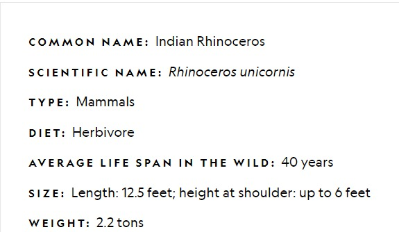
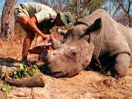

A rhinoceros, commonly abbreviated to rhino, is a member of any of the five extant species of odd-toed ungulates in the family Rhinocerotidae, as well as any of the numerous extinct species therein. Two of the extant species are native to Africa, and three to Southern Asia. The term "rhinoceros" is often more broadly applied to now extinct species of the superfamily Rhinocerotoidea. Members of the rhinoceros family are some of the largest remaining megafauna, with all species able to reach or exceed one tonne in weight. They have a herbivorous diet, small brains (400–600 g) for mammals of their size, one or two horns, and a thick (1.5–5 cm) protective skin formed from layers of collagen positioned in a lattice structure. They generally eat leafy material, although their ability to ferment food in their hindgut allows them to subsist on more fibrous plant matter when necessary. Unlike other perissodactyls, the two African species of rhinoceros lack teeth at the front of their mouths, relying instead on their lips to pluck food. Rhinoceros are killed by some poachers for their horns, which are bought and sold on the black market, and used by some cultures for ornaments or traditional medicine.
Indian rhinos once inhabited many areas ranging from Pakistan to Myanmar and maybe even parts of China. However, because of human influence, they now exist in only several protected areas of India (in Assam, West Bengal, and a few pairs in Uttar Pradesh) and Nepal, plus a pair in Lal Suhanra National Park in Pakistan reintroduced there from Nepal. They are confined to the tall grasslands and forests in the foothills of the Himalayas. Two-thirds of the world's Indian rhinoceroses are now confined to the Kaziranga National Park situated in the Golaghat district of Assam, India.
Both black and white rhinoceroses are actually gray. They are different not in color but in lip shape. The black rhino has a pointed upper lip, while its white relative has a squared lip. The difference in lip shape is related to the animals' diets. Black rhinos are browsers that get most of their sustenance from eating trees and bushes. They use their lips to pluck leaves and fruit from the branches. White rhinos graze on grasses, walking with their enormous heads and squared lips lowered to the ground.
Rhinos are hunted and killed for their horns. The major demand for rhino horn is in Asia, where it is used in ornamental carvings and traditional medicine. Rhino horn is touted as a cure for hangovers, cancer, and impotence.The most common reason for rhino poaching is to meet the high demand for their horns in Asian countries, where the horn is predominantly used in Traditional Chinese Medicine but is increasingly being used as a symbol of wealth and prosperity.
Rhinoceros hunted and killed.